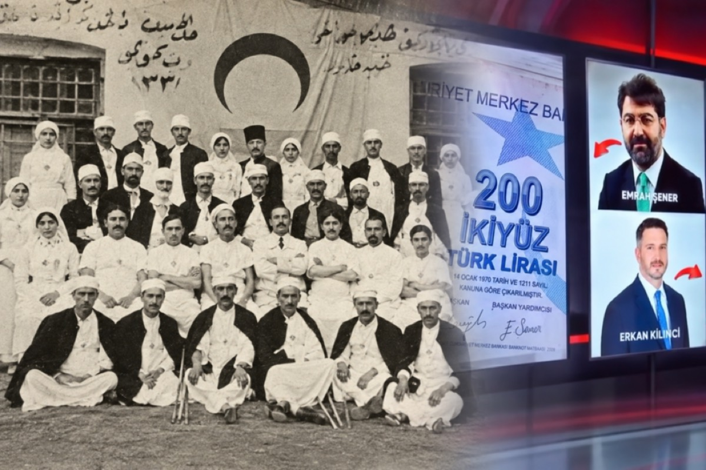

Trahomla Savaştan Türk Lirasını Kurtarmaya: Cumhuriyetçilik, Bugün Yeniden…
Türkiye’de Cumhuriyet, bağımsızlık savaşı ile devrimin birleştiği tarihi bir kavşaktı. Bu kavşağın niteliklerine dair çok şey yazılabilir, söylenebilir. Fakat bu yazıda Cumhuriyet’in araştırmalara ve analizlere pek…

Türkiye’de Cumhuriyet, bağımsızlık savaşı ile devrimin birleştiği tarihi bir kavşaktı. Bu kavşağın niteliklerine dair çok şey yazılabilir, söylenebilir. Fakat bu yazıda Cumhuriyet’in araştırmalara ve analizlere pek dahil edilmeyen bir boyutuna, bugünkü anti-Cumhuriyetçi rejimi ortaya çıkaran kök nedenlerden birine işaret etmeye çalışacağım.
Bilindiği gibi Cumhuriyet kurulduğunda Türkiye, birkaç basit imalathane dışında sanayisi olmayan, ilkel sabandan başka bir teknolojinin girmediği tarımsal üretim faaliyetiyle nüfusunu beslemeye çalışan bir ülkeydi. Bu nüfus büyük oranda okuma yazma bilmeyen, temel sağlık hizmetlerine ulaşamayan, ezici çoğunluğu kırsal alanlarda yaşayan yoksul insanlardan müteşekkildi.
Cumhuriyet’in kurucu kuşağı, bir yandan bu geri kalmış ülkenin kalkındırılması diğer yandan önemli bir kesimi ücra bölgelerde yaşayan nüfusa temel hizmetlerin ulaştırılması gibi ertelenemez bir görevle karşı karşıyaydı. Her iki başlıkta da gelişmeler uzun bir döneme yayıldı ve karmaşık bir karne çıktı. Ama özellikle Cumhuriyet’in kuruluş yıllarında, bazı toplumsal sorunlar karşısında örnek alınası bir mücadele örgütlenebildi.
Bu mücadelelerin başlıca kaynağı, eğitimli yeni kuşaktı. Ülke, her türlü toplumsal seferberlikte canla başla çalışacak sağlıkçılara, baytarlara, öğretmenlere, mühendislere ve daha nice meslek grubuna ihtiyaç duyuyordu. Cumhuriyet’in çok fazla bilinmeyen ancak halkın yaşamını radikal biçimde değiştiren mücadeleleri, bu eğitimli genç kuşağın özverisiyle ve onların şekillendirdiği yeni kurumların kolektif çabası sayesinde başarıldı.
Durumu somutlaştırabilmek için Cumhuriyet tarihinin iyi bilinmeyen bir sayfasına, trahomla mücadelesine bakalım. Trahom, enfekte ettiği insanların görme yetisini kaybetmesine yol açan, özellikle Doğu ve Güneydoğu Anadolu’daki bazı köylerde nüfusun yüzde %80 ila 90’ını etkileyen bir sosyal felaketti. 1925 yılında Cumhuriyet, bu hastalıkla topyekün mücadele etmek üzere bir seferberlik başlattı. Sağlık Bakanlığı çatısı altında oluşturulan teşkilatlanmayla bu hastalığa karşı hakiki bir savaş başlatıldı. Hastalığı tedavi etmek için özel trahom hastaneleri kuruldu. Bu hastanelere ulaşamayacak ücra köylere ise özel gezici ekiplerin gönderilmesi gerekiyordu.
Sağlık memurları katır sırtında ya da yaya olarak saatler süren yolculuklar yaparak bu ücra köylere ulaştılar. Aynı esnada hastalığın kolaylıkla yayıldığı okullarda çocukları korumak ve tedaviye yönlendirebilmek üzere, öğretmenlere ve öğretmen adaylarına göz hijyeni, teşhis koyabilme ve göz damlası kullanabilme eğitimleri verildi. Böylece genç öğretmenler de sağlıkçılara katıldı.
Cumhuriyet’in sağlık teşkilatı bu mücadeleyi kararlılıkla ama en önemlisi planlayarak, gerekli kurumsal altyapıyı kurarak, yasal çerçeveyi hazırlayarak ve dünyadaki tıbbi gelişmleri yakından takip edip Türkiye’ye taşıyarak kazandı. Aksaklıklar, eksiklikler, ihmaller mücadeleyi zaman zaman sekteye uğratsa da 1970’lere gelindiğinde trahom kitlesel bir halk sağlığı sorunu olmaktan çıkmıştı ve bir süre sonra da tamamen tarihe karıştı.
Bu ve bunun gibi kararlılık, adanmışlık ve fedakarlık gerektiren mücadeleler sürdürülürken halkın iyiliğini sağlamak hedefiyle harekete geçenler, aslında Yakup Kadri’nin Yaban romanında köylülerin geri kalmışlığından ve cehaletinden kendisini sorumlu tutan Ahmed Celal’lerdi.
Sınıfsal çıkarlarını her şeyin üstünde tutan sermayeye, yolsuzluk ve hukuksuzlukla iş yapan bazı bürokrat ve siyasetçilere rağmen, kamusal sorumluluk duygusuyla hareket eden eğitimli insan gücünü, Cumhuriyet’in sağlam kalan belkemiği olarak düşünmek gerekir.
1940’lardaki karaborsacılığı, 1950’lerdeki vurgunculuğu ve baskıyı kabullenemeyen bu kesimler, 1960’lardan itibaren tam da “kamusal çıkarı” her şeyin üstünde tuttukları için solculaştılar. Onları öğretmen, mühendis ya da sağlık ortamındaki hak mücadelelerinde bir araya getiren şey, kamunun, yani halkın çıkarını üstün tutma bilinciydi. Her ne kadar 2000’lerde üretilen anti-Kemalist yazın bu kuşağın siyasî serüvenini “solun Kemalizme bulaşıklığı” üzerinden analiz etmeye çalışsa da aslında belirleyici olan, kurucu kuşaktan devralınan ancak sosyalizm etkisi altında sınıfsal yönü belirginleşmeye başlayan bir tür kamuculuktu. Bu ortak bilinç, 1923 cumhuriyetçiliği ile sosyalist cumhuriyetçiliğin siyasal olarak yan yana gelmesini sağladı.
12 Eylül rejimi, sosyalizmi bürokrasiye taşıyan bu ortaklaşmayı büyük bir tehdit olarak gördü. Darbecilerin, Cumhuriyet’e yönelik en ağır darbelerden birini buraya, yani “kamusal sorumluluk” duygusuna vurması boşuna değildi. Kamusal sorumluluk, kamuya ait olanın suistimalden ve özel çıkarlardan sakınılması gerektiği anlayışı, en üst düzey bürokratından en küçük devlet dairesindeki memura kadar her kademeye iş yaparken gözeteceği bir “ilke” kazandırıyordu. Bu ilkeyle hareket edenler belki hiçbir zaman çoğunluk olamadı ancak kurumlar içinde kamu çıkarının açık biçimde çiğnenmesine uzun süre ciddi bir engel teşkil edebildiler.
12 Eylül rejimi, bu ilkelerin yerine kolay yoldan zengin olmayı, fırsatını bulunca çalmayı ve “köşeyi dönmeyi” amaç haline getiren bir dürtüyü yerleştirmeye çalıştı. Dönemin Başbakanı Turgut Özal, “Benim memurum işini bilir” derken sadece rüşveti normalleştirmiyor, kamunun işini kamu çıkarını gözeterek yapma felsefesini de gözden düşürmeye çalışıyordu. Çünkü halkın kaynaklarının ortak iyilik için kullanılmasını gözeten bir cumhuriyetçiliğin sola evrileceğini biliyorlardı. Ama esas olarak, 12 Eylül’ün yeni birikim rejimi olan neoliberal serbestleşme, kaynakların kurallı ya da kuralsız bir şekilde bir azınlığa aktarılması esasına dayanıyordu.
Dahası, 12 Eylül öncesinden başlayarak ve bir dönüm noktası olarak 12 Mart’tan itibaren iyice güç kazanan “sağ cumhuriyetçilik”, siyasî alanda ağırlığını gittikçe daha belirgin hissettirmekteydi. “Sağ Kemalizm” de denen ama zaman içinde Kemalizmle de bağı kalmayan bu yaklaşım, baskın olarak devletin bekasını her şeyin üzerinde tutan statükocu, işçi ve sol düşmanı bir karaktere büründü. Özellikle 1990’lardan ve 2000’lerden itibaren bu sağ cumhuriyetçi kesimin, Cumhuriyet’in yetiştirdiği ilk kuşakların kamu çıkarını gözeten halkçı yaklaşımını neredeyse tamamen terk ettiğine tanık olduk. Temel ilkeleri, yollarını sık sık AKP ile kesiştiren soyut bir “devlet çıkarı” kavramından ibaret kaldı.
Bugün ülkemizin içinde bulunduğu büyük çöküşe ve bu çöküşün baş sorumlusu olan anti-cumhuriyetçi rejimin karakterine baktığımızda, aslında gördüğümüz şey 12 Martçıların, 12 Eylülcülerin ve Özalların kurduğu sistemin nihaî başarısıdır.
Trahoma savaş açan kuşaklardan TBMM gündemine taşınan iddialara göre iktidara yakınlığı sayesinde hızla yükselerek Türkiye İlaç ve Tıbbi Cihaz Kurumu’nun başına geçen, görevi esnasında organize suç ağı kurarak akıllı kanser ilaçlarını değerinin binlerce katı fahiş fiyatlarla ülkeye getiren ve yıllar içinde belki de binlerce kanser hastasının ilaca ulaşmasını engelleyen AKP kuşağına böyle gelindi. Bu insanlık dışı suçla ilişkilendirilen figürlerin birer istisna olmadığını, ne yazık ki, biliyoruz.
Son dönemde ülkeyi sarsan fon vurgunu ve usulsüzlüklerle ilgili öğrendiğimiz her bir ayrıntı; kamu çıkarının üstünlüğü ilkesini, bir başka deyişle halka ait olana sahip çıkma hassasiyetini tamamen kaybeden kadrolardan oluşan bir rejimin neye benzeyeceğini gözler önüne seriyor. Bu rejimin yetiştirerek bürokraside yükselttiği kuşaktan, Türkiye’nin egemenlik sembolü olan Türk lirası üzerinde imzası bulunan üç kişinin birden dolandırıcılık veya vurgunculuk iddialarıyla gündeme gelmesinin vehametini ne kadar vurgulasak az.
Ülkenin egemenlik sembolleri bile bu ellere düşmüşse; “erdemi” halkçılık, “erdemi” kamuculuk olanların yeni bir kurtuluş ve kuruluş iradesiyle bir araya gelmesinden başka çaresi kalmamış demektir. Mücadele azmini, katır sırtında trahomla savaşmaya giden halkçı cumhuriyetçilerin mücadelesinden alarak…